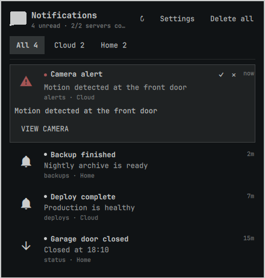
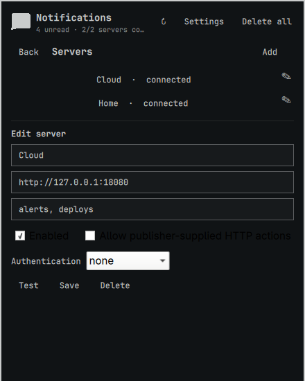

One merged inbox
Read every configured server chronologically in All, or jump to a server tab without losing connection context.
ntfy × Omarchy
Combine ntfy.sh and self-hosted servers in one quiet, keyboard-first panel. Read, delete, search, run trusted actions, and keep every server's state separate.

One glance, then back to work
Omartfy keeps notification handling in a compact panel instead of turning the bar into a dashboard.
Read every configured server chronologically in All, or jump to a server tab without losing connection context.
View and copy actions work directly. Publisher-supplied HTTP actions remain off until you explicitly trust that server.
Navigate with j/k and h/l, mark read with Enter, expand with e, search with /, and run visible actions with 1–3.
Right-click the bar icon for timed or indefinite DND. Messages continue collecting while badges and urgency stay muted.
Cursors, deduplication, local read/delete state, and DND survive Omarchy shell restarts without changing ntfy upstream.
Useful icons and raster previews load lazily with origin, redirect, format, size, and dimension limits.
Profiles that stay understandable
Each profile owns its label, base URL, topic list, credentials, trust settings, connection state, and unread count. Reverse-proxy path prefixes are supported.

Install
Omarchy clones the plugin into your user configuration and enables its bar widget.
$ omarchy plugin add https://github.com/DailenG/omartfy --enable
Open Settings, add a server, then add one or more topics. Omartfy does not create a default subscription because ntfy topic names can act as public addresses.
Secure defaults
Configuration and state are written atomically with restrictive permissions. TLS verification is never disabled. HTTP actions require per-server opt-in and run only after a user activates them.
Read the security policy →